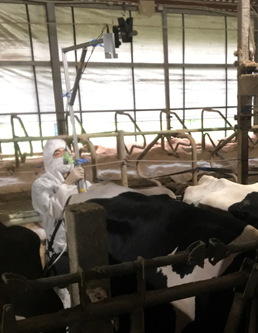
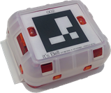
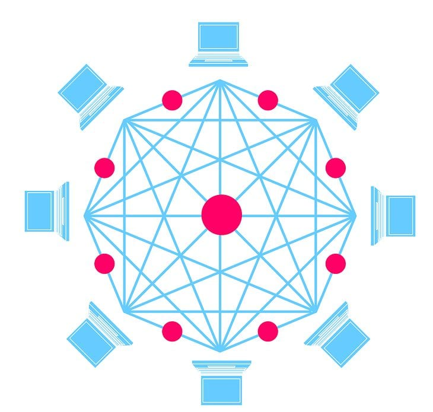

畜産農家のための東京理科大学発ベンチャー
現在、普及が進んでいるのが、「スマート畜産」として括られるロボット、AI、IoT技術の数々です。農林水産省の「スマート農協技術カタログ」では技術を以下のように分類されています。
当社が提供するサービスは①～⑤の技術を網羅しております。主な適用技術をご紹介いたします。
搾乳ロボットの出口側の柵に設置された金属センサーと出口上部に固定されたカメラを連携することで（固定式）、搾乳が終わった牛を撮影し、BCS判定を行います。現在、最新の軽量カメラを使用することでポータブル化も行いました。また、本システムでは、AIの技術を用いて深度画像から背景を除去することを可能としています。
BCS測定システム 活動量計を牛に装着することで牛の活動量データを取得します。また、この活動量計の番号を認識することで装着している牛の画像に個体情報の表示を可能としました。併せて活動量計からデータを受信する際の電波強度を集約、機械学習することで牛の位置が特定します（特許出願済）。
活動量計 蓄積した活動量データを用いて発情を予測するアルゴリズムを開発しました。機械学習により牛の位置情報を特定する仕組みを構築しました（特許取得）。その他、乳中のデータを基に機械学習を活用して乳房炎発症予測、潜在性ケトーシス発症予測を行います。
AI分析 特許牛の取引において、育成農家から搾乳農家へと取引される際、血統や哺乳量等の客観的なデータが関係者間で適切に共有される必要があります。ブロックチェーン技術による子牛・母牛の情報のデータベース化は親和性が非常に高く、取引におけるデータの正当性・一貫性を確保することができます。
